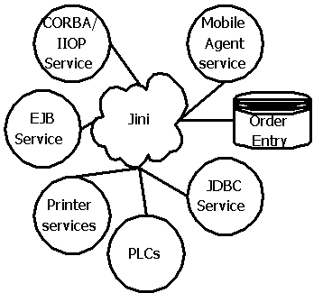
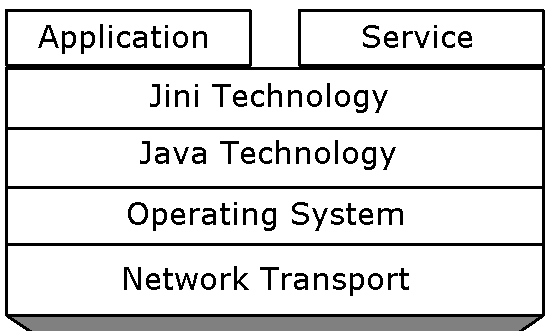

Jini - The Network Dialtone
| How to Develop A Simple Jini Service... | |
| How to Develop A Simple Jini Client... | |
My article on Jini Technology |
|
| Jini Technology | |
Jini (pronounced the same as "Genie", ie., "jee-nee", not "jin-nee") is a programming model that simplifies distributed systems development and deployment. It takes care of some of the common but difficult parts of distributed development - parts that deal with discovery and look-up of distributed services.
It achieves this by organizing distributed services as federations thus making bootstrapping and look-up of distributed services easier. Once part of a federation, a service can be discovered or looked-up by other services or clients.
 Jini services may be as diverse as providing device capabilities for remote printer devices, to providing a set of database services for multiple clients, to providing transaction support services for environments which do not have transaction processing monitors.... In essence, the range of distributed services that can be provided by Jini can only be limited by your imagination -- be they system software services like drivers for devices or generic software services available through a network.
Jini is a network-centric computing architecture which enables "plug and play" on the network. With Jini, Component-Oriented Programming is no longer limited to a single address space. Jini Clients request services by their Java interfaces and Jini services inject code into their clients to provide these requested services.

Jini consists of:
A Programming Model which helps you build a distributed system organized as a federation of Jini services & clients, and A Runtime Infrastructure that resides on the network and provides mechanisms for adding, removing, locating and accessing services. The Programming Model is used by Clients to enlist the help of Jini services in achieving the client's goal. It consists of support for leasing, events and transactions.
The Runtime infrastructure is used by Jini Services to make themselves available when they join the network. It is also used by Clients to locate and contact Jini services. It consists of support for discovery, join and lookup.
The Runtime Infrastructure resides in the lookup services and in Jini-enabled devices. Lookup services are the central organizing mechanism for Jini-based systems. When a device is plugged into a network, it registers its services with a lookup service. The device and its services are now part of a federation. When a client wishes to locate a Jini service to assist with some task, it consults a Jini lookup service.
Lookup services organize the Jini services they contain into Groups. A Group is a set of registered services identified by a string. "Corporate EJB Servers" group can be services offered by all EJB Servers running in a Company's local area network. Similarly "EOI Dept Printers" group can be services offered by all Printers on the EOI Dept. local network. A service can be a member of multiple groups. Multiple lookup services can also maintain the same group. Redundancy can make a Jini system more fault tolerant.
Discovery, Join and Lookup
The Runtime Infrastructure enables Jini services to register with lookup services through a process called discover and join. Discovery is the process by which a Jini-enabled device locates lookup services on the network and obtains references to them. Join is the process by which a device registers the services it offers with lookup services. The runtime infrastructure enables clients to locate and contact services through a process called lookup.Leasing
Leasing adds time to the notion of holding a reference to a resource, enabling references to be reclaimed safely in the case of network failures. Persistence of the held reference depends on renewed proof of interest expressed by renewing a lease. Lease holders can safely crash, get disconnected, or simply forget about a leased resource.
How Leasing works:
The Client "Holder" requests a lease from a "Grantor". The Holder may negotiate a lease duration. The Grantor decides whether or not to grant the lease for that lease duration. The Grantor may then send the Holder a Lease object. The Lease may be exclusive or non-exclusive. The Grantor agrees to keep the resource available, to the best of its ability, until the lease is cancelled or expires. If the Lease is cancelled or expires, the Holder can dispose of the resource.Distributed Events
Generally, events in Distributed systems cannot be guaranteed to be delivered in a timely fashion. Jini includes a distributed event model to facilitate building a reliable distributed system. The Event Generator generates remote events upon abstract state changes. The Event Listener registers interest in being notified of the abstract state changes in the Event Generator. The registration of the interest is lease-based. The remote event is passed from the Event Generator to the notify() method of the registered Event Listeners. Each RemoteEvent object contains an identifier for the kind of event, a reference to the Event Generator, a sequence number and an object that was passed in as part of the registration of interest in the event. Objects that want to receive notification of a remote event, implement the RemoteEventListener interface. Unlike JavaBeans events, Jini events are identified by an event identifier and the event source. An UnknownEventException is thrown if the event is not recoganizable.Transactions
Transactions enable operational groupings into all failed or all successful operations. Transactions are managed and completed by the TransactionManager. A Transaction object understands transactional semantics.
How Transactions happen:
The Client hands a factory method a TransactionManager reference and a lease duration. The client receives from the factory method a new Transaction object and a Lease object. The client passes this Transaction object to participants when asking a participant to do a task "under the transaction". Participants must "join" the transaction before performing the task. If a client or a participant "aborts" the transaction, the TransactionManager instruct all participants to "rollback". If a client or a participant "commits" the transaction, the TransactionManager queries all participants. If all participants report either "prepared" or "no-change", the TransactionManager will instruct all participants to "roll forward".